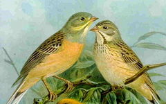
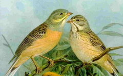

| Ortolan | |
|---|---|
|  | |
| Conservation status | |
| Binomial name | |
| Emberiza hortulana Linnaeus, 1758 |
| Ortolan | |
|---|---|
|  | |
| Conservation status | |
| Binomial name | |
| Emberiza hortulana Linnaeus, 1758 |
The Ortolan, or Ortolan Bunting, Emberiza hortulana, is a bird in the bunting family Emberizidae, a passerine family now separated by most modern authors from the finches, Fringillidae. The bird's common name is French, from the Latin hortulanus, the gardener bird, (from hortus, a garden).
A native of most European countries and western Asia the Ortolan migrates in autumn to tropical Africa, returning at the end of April or beginning of May.[citation needed] Its distribution throughout its breeding range seems to be very local, and for this no obvious reason can be assigned. It was said in France to prefer wine-growing districts;[citation needed] but it certainly does not feed upon grapes, and is found equally in countries where vineyards are unknown. It reaches as far north as Scandinavia and beyond the Arctic Circle, frequenting cornfields and their neighbourhoods. It is an uncommon vagrant in spring and particularly autumn to the British Isles.
The Ortolan is 16 cm in length and weighs 20–25 grams (0.71–0.88 oz). In appearance and habits it much resembles its congener the Yellowhammer, but lacks the bright colouring of that species; the Ortolan's head, for instance, is greenish-grey, instead of a bright yellow. The somewhat monotonous[citation needed] song of the cock resembles that of the Yellowhammer.
Ortolan nests are placed on or near the ground; the eggs seldom[citation needed] show the hair-like markings so characteristic of most buntings' eggs.
Seeds are the natural diet, but beetles and other insects are eaten when feeding young.

{kind=link}
{kind=link}
{kind=link}